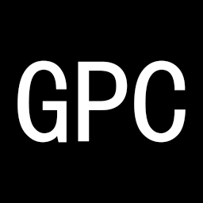

GenerateProjectContext
Windows 独立版把任意代码项目整理成一份 Markdown 上下文文档
——用于人工快速理解项目，也用于给 AI 提供完整工程上下文。
它做什么
GenerateProjectContext 扫描一个代码项目，把目录结构、代码签名、源码、配置和 Git 历史整理成一份结构化的 PROJECT_CONTEXT.md。这份文档既方便人快速浏览项目全貌，也可以直接喂给 AI，省去反复解释工程背景的成本。
它不做代码生成，不做静态分析报告，也不替代 IDE。它只做一件事：把项目的“上下文”提取出来，变成一份可读、可携带、可投喂的 Markdown 文档。
特性
- Windows 零依赖独立版 最新发布版提供免安装 Python 的 Windows 可执行文件，双击即可运行，不需要配置任何开发环境。
-
语言感知降噪
自动识别项目语言，只应用相关语言的忽略规则，不把
node_modules和__pycache__混在一起处理。 - 双执行模式 图形界面与 CLI 行为一致，不碰终端的人用桌面应用，脚本化场景用命令行，输出结果相同。
- AST 代码结构摘要 从 Python 源码提取类与函数签名，生成结构总览，不必在源码里逐文件翻找。
- Git 历史汇总 输出当前分支、最新提交、提交概览和变更文件清单，让上下文带上时间维度。
-
高度可配置
通用配置与语言级配置分层合并，
--dump-config可打印最终生效配置及其来源。 -
零强制依赖（pip 版）
核心 CLI 只用标准库（Python 3.9/3.10 需
tomli），不引入第三方包。
安装
Windows 独立版（推荐）
从 GitHub Releases 下载最新的 Windows 可执行文件，双击运行，无需安装 Python、无需管理员权限。
下载后建议核对 Release 页面提供的 SHA-256 校验值。首次运行可能触发 Windows SmartScreen 提示，这是因为可执行文件尚未使用商业代码签名，属于正常现象。
pip 安装（开发者 / 脚本集成）
需要 Python 3.9+。适合需要把 GenerateProjectContext 嵌入 Python 脚本、CI 流水线或非 Windows 环境的场景。
独立版 vs pip 版
| Windows 独立版 | pip 版 | |
|---|---|---|
| 前置条件 | 无，双击即用 | 需要 Python 3.9+ |
| 主要使用方式 | 图形界面 | CLI / Python API |
| 适合场景 | 直接使用、不碰终端 | 脚本集成、CI、跨平台 |
| 更新方式 | 重新下载 Release | pip install -U |
| 体积 | 较大（打包运行时） | 较小（依赖系统 Python） |
快速开始
Windows 独立版：桌面应用
打开下载的可执行文件 → 选择项目文件夹 → 点击“开始生成” → 生成的 PROJECT_CONTEXT.md 默认落在项目目录下。整个过程不需要输入任何命令。
pip 版：命令行
最常用的脚本化方式：进入项目目录，跑一条命令。
# 分析当前目录，输出到 ./PROJECT_CONTEXT.md
project-context .
# 指定输出路径
project-context /path/to/project -o context.md
# 只出结构，不输出源码内容（适合超大项目喂给 AI）
project-context . --no-contentpip 版：Python API
需要把上下文生成嵌进脚本或工具链时使用。
from project_context import generate_context
# 输出到 ./PROJECT_CONTEXT.md
generate_context(root=".")
# 只要 Markdown 字符串，不落盘
md = generate_context(root=".", output=None)生成的文档长什么样
输出是一份结构固定的 Markdown，依次包含：
- 项目概览 — 文件数、行数、激活语言、Git 分支、配置来源
- 目录结构 — tree 风格，已按语言规则过滤噪音
- 代码结构总览 — Python 类与函数签名（AST 摘要）
- 源码与配置文件内容 — 每个文件的完整内容，带代码块语言标签
- Git 提交历史 — 分支、提交概览表、提交详情
设计边界
参见 组织级边界原则。GenerateProjectContext 在本机读取项目文件，不向任何外部服务发送代码内容；Windows 独立版不联网、不收集使用数据。生成的上下文文档由使用者自行决定用途。它不做代码执行、不做依赖解析、不尝试理解运行时行为，只做静态文件的汇总与结构化。